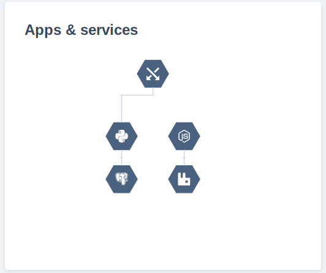

My monolith application is getting too big to handle.
Most successful microservice systems start as monoliths,
then get broken up as they grow.
Fortunately, splitting up a project is easy.
1 - Move your existing application to a subdirectory
2 - Add your new application in its own directory
3 - Optionally add services to coordinate your applications
They can also talk to each other directly; your choice!
4 - Applications can also spawn worker containers
The same application, but a different run configuration
5 - git push; we'll take it from there

Your new applications and services are deployed!
When ready, just merge to master
Mix and match any supported language as you please.
<
Problem: My monolith is getting too big to handle.
Script
Overlay: Most successful microservice systems start as monoliths, then get broken up as they grow.
Show: Command line, check out project, make new branch.
Overlay: Fortunately, splitting up a project is easy.
Show: `mv` all files to a subdirectory, including .platform.app.yaml.
Show: Add a new directory, put a .platform.app.yaml file in it. Copy in some files (or something?)
Overlay: Platform.sh supports multiple applications in a single project and Git repository. Split off whatever you need, whenever you need.
Show: Add RabbitMQ to services.yaml
Show: Git commit, git push.
Overlay: And when your split-architecture is ready, just merge back to production. It's that simple.
Shows
Transition to microservices
Experiment with new Architectures
RabbitMQ
Build code on git push
YAML-based configuration